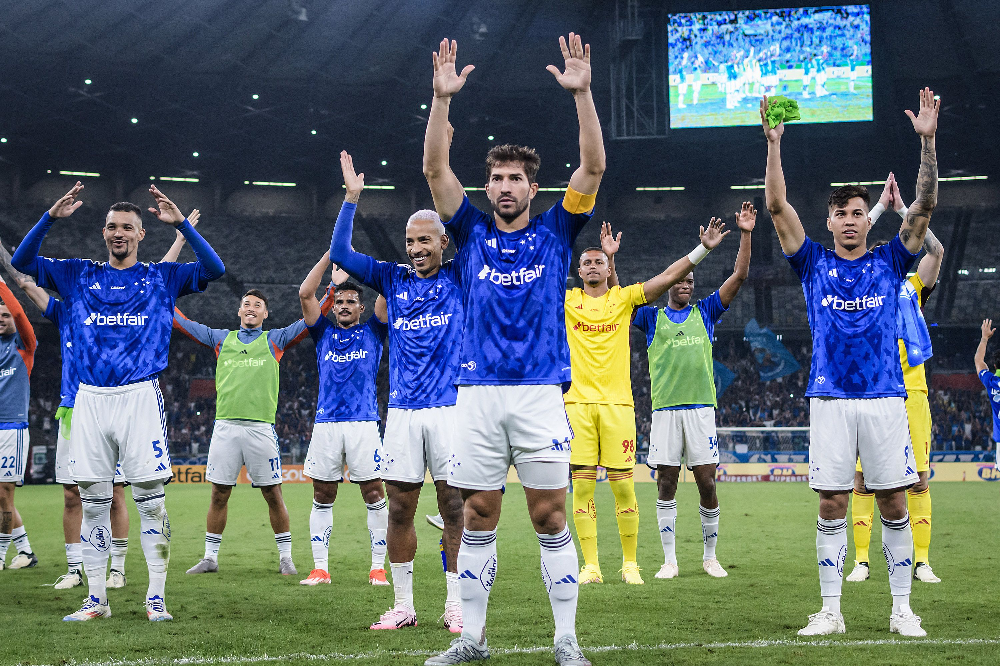

Cruzeiro vence o Palmeiras e se classifica para a última fase da Libertadores
Com elenco forte e destaque para MP e KJ, a Raposa pode alcançar seu terceiro título na
copa
Por Vinicio Daileson| 14/10/2026

Após um elenco maravilhoso e destaque para MP e KJ, o Cruzeiro leva vantagem em cima do
Palmeiras e se classifica para a última fase da Libertadores, onde poderá alcançar seu terceiro título na
copa.
O Elenco Celeste
O plantel mescla a liderança de atletas consagrados com a energia e a qualidade de jovens
talentos internacionais.
- Referência no gol: o experiente goleiro Cássio traz segurança e bagagem de títulos para
debaixo das traves.
- Cérebro e liderança: no meio-campo, Matheus Pereira é o grande motor técnico da equipe
e artilheiro do time no campeonato, atuando ao lado de nomes de peso como Gerson e o volante Lucas
Romero.
- Poder de fogo: o setor ofensivo é liderado pelo jovem atacante Kaio Jorge, peça
fundamental no ataque da Raposa, acompanhado da joia equatoriana Keny Arroyo.
Desempenho recente
O desempenho recente da equipe no Brasileirão ilustra a oscilação natural na busca pelo modelo
ideal de jogo:
- Red Bull Bragantino 4 x 2 Cruzeiro (Brasileirão, 12/10): derrota. Gols celestes de Zé
Lucas e Matheus Henrique.
- Cruzeiro 2 x 0 São Paulo (Brasileirão, 07/10): triunfo consistente diante do torcedor
no Mineirão.
- Vitória 1 x 3 Cruzeiro (Brasileirão, 20/09): vitória de virada fora de casa, exaltando
o brio do elenco.
Mesmo após o revés recente em Bragança Paulista, o Cruzeiro se mantém firme na briga pelas
posições de vanguarda, mostrando que a evolução coletiva sob as ideias de Artur Jorge continua sendo o norte
para o encerramento da temporada.
Vitória de 10 x 0 sobre o Palmeiras.
Leia mais